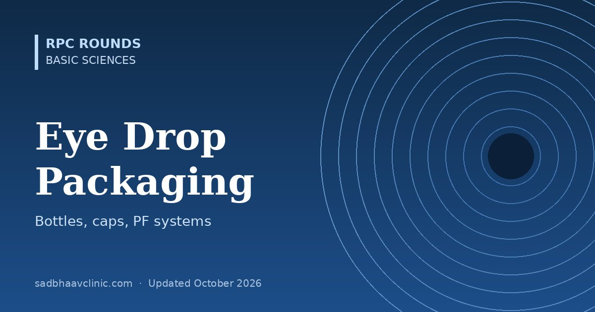

Last updated: October 2026
An eye drop is a drug and a device. The bottle decides how big each drop is, whether a preservative is needed, how long the drop stays sterile after opening, and whether an elderly patient can tell one drug from another. This page reviews the packaging of eye drops, from the ordinary dropper bottle and cap colours to unit-dose vials, Novelia and other preservative-free multidose bottles, and the newer devices that replace the drop altogether.
Most eye drops in India still come in a 5 mL or 10 mL low-density polyethylene (LDPE) squeeze bottle. It has three parts: the soft bottle, a nozzle insert (the dropper tip) pressed into its neck, and a screw cap. A tamper-evident ring or shrink band shows the bottle has not been opened. The bottle is filled and sealed sterile, but once opened, every use lets air and possibly germs in, so the solution needs a preservative.
| What sets drop size | Effect |
|---|---|
| Tip orifice and outer diameter | The main factor. A wider tip makes a bigger drop; this is fixed by the manufacturer. |
| Angle of the bottle | Holding the bottle vertical gives the most consistent drop; tilting it changes the size. |
| Squeeze force and speed | A hard or fast squeeze can release a stream or a double drop. |
| Viscosity and surface tension | Gels, suspensions and solutions with surfactants (including BAK) form different-sized drops. |
| Volume | Approximate figure |
|---|---|
| Drop from a standard bottle | About 40 µL on average (39.8 µL across nine medications in one 2023 study); published products range from about 25 µL to over 70 µL |
| Volume the tear film can usefully hold | Roughly 10–20 µL; drops above about 20 µL overflow without adding effect |
| Drops in a 2.5 mL bottle | About 70 with a standard tip, about 184 with a drop-reducing adaptor |
| Preservative | Type and how it works | Found in | Ocular surface |
|---|---|---|---|
| Benzalkonium chloride (BAK) | Quaternary ammonium detergent; breaks bacterial cell membranes. Usually 0.004–0.02%. | Most generic glaucoma, antibiotic, steroid and lubricant drops | Most toxic: punctate keratitis, shorter tear break-up time, goblet cell loss, conjunctival inflammation. Also loosens epithelial junctions, which increases drug penetration. |
| Polyquaternium-1 (Polyquad) | Large cationic polymer (about 27 times the size of BAK), so it enters human cells poorly | Travoprost (some brands), Systane lubricants | Much less toxic than BAK; symptoms improve on switching |
| Stabilised oxychloro complex (Purite) | Oxidising agent; breaks down to chlorine dioxide, water and salt in light | Brimonidine-Purite, Refresh Tears | Better tolerated than BAK-preserved brimonidine |
| SofZia | Ionic buffer (borate, sorbitol, propylene glycol, zinc) that is antimicrobial in the bottle and breaks down on contact with the tear film | Travatan Z | Less toxic than BAK |
| Sodium perborate | Oxidising agent; turns into hydrogen peroxide, then water and oxygen | GenTeal and some lubricants | "Vanishing" preservative; mild |
| Others | Cetrimide, chlorobutanol, thiomersal (now rare), with EDTA added as a helper (it binds calcium and magnesium, and weakens bacterial walls) | Older formulations | Thiomersal causes allergy; chlorobutanol is volatile |
A preserved multidose bottle is usually discarded 4 weeks after opening; always follow the label. Soft contact lenses absorb BAK, so lens wearers should remove lenses before preserved drops and wait about 15 minutes before putting them back.
Since 1983 the American Academy of Ophthalmology (AAO) has recommended a standard cap and label colour for each class of topical eye drug, so that patients and staff can spot a wrong bottle. The latest revision (2015) has 13 colours, each defined by a Pantone shade. The system is voluntary: it was developed with the FDA and US industry, and most US manufacturers follow it, but no law requires it. Indian manufacturers are not bound by it, so cap colours vary between brands.
| Cap | Drug class | Examples |
|---|---|---|
| Tan | Anti-infectives | Moxifloxacin, tobramycin, natamycin |
| Pink | Steroids | Prednisolone acetate, loteprednol, dexamethasone |
| Grey | NSAIDs | Ketorolac, nepafenac, bromfenac |
| Olive green | Immunomodulators | Ciclosporin, lifitegrast |
| Red | Mydriatics and cycloplegics | Tropicamide, phenylephrine, cyclopentolate, atropine |
| Dark green | Miotics | Pilocarpine |
| Yellow | Beta-blockers | Timolol, betaxolol |
| Dark blue | Beta-blocker combinations | Dorzolamide-timolol, brimonidine-timolol |
| Purple | Adrenergic agonists | Brimonidine, apraclonidine |
| Light green | Adrenergic agonist combinations | Brinzolamide-brimonidine |
| Orange | Carbonic anhydrase inhibitors | Dorzolamide, brinzolamide |
| Turquoise (teal) | Prostaglandin analogues | Latanoprost, travoprost, bimatoprost |
| Black | Cytotoxic | Mitomycin C, 5-fluorouracil |
Swatches are approximate screen colours of the AAO Pantone shades. Examples are typical; check the bottle in hand.
Single-dose units are small LDPE ampoules (about 0.3–0.5 mL) made by blow-fill-seal: the plastic is moulded, filled and sealed in one sterile step. They contain no preservative, because each vial is used once and thrown away. They are used for lubricants in severe dry eye, for preservative-free glaucoma drops (for example tafluprost), after corneal surgery, and in patients allergic to preservatives.
| Advantages | Drawbacks |
|---|---|
| No preservative; sterile until opened | Costly per dose |
| Easy to carry; no in-use period to remember | Twist-off tops are hard to open with arthritis, and a sharp edge can scratch the eye |
| Good for occasional or short-term use | Each vial holds several drops, so most is wasted, and the plastic adds up |
| Patients often keep and reuse an opened vial, which defeats the purpose |
These bottles give the convenience of one bottle with the safety of no preservative. All of them must solve the same two problems: stop liquid that has touched the eye from flowing back into the bottle, and replace the volume of each drop with air that cannot carry germs in. They do it in two main ways: by filtering, or with a one-way valve at the tip.
| System (maker) | How it works | Notes |
|---|---|---|
| Novelia (Nemera) | A one-way silicone valve at the tip lets a drop out and closes, so no liquid flows back. Air re-enters through a separate solid silicone membrane (PureFlow) with no pores. Some versions add silver to the cap or tip. | Introduced 2010 (by Rexam, now Nemera). The maker reports over 550 products in more than 55 countries, including Systane Hydration PF in the US. Five valve sizes set the drop size. Labels warn people allergic to silver where silver is used. |
| OSD, Ophthalmic Squeeze Dispenser (Aptar) | A spring-loaded tip seal opens only above a set squeeze pressure and closes straight after the drop. Returning air passes a 0.2 µm sterile air filter; the liquid itself is never filtered and touches no metal. | Launched 2011; the device in Restasis MultiDose (FDA approved 2016). Works with solutions, emulsions and suspensions. |
| ABAK (Laboratoires Théa) | A filter membrane in the tip that both drops and returning air must pass. Early versions removed the preservative from a preserved solution; current versions hold preservative-free solutions. | Kept sterile for up to 3 months after opening (per the maker). Suits thin solutions only; the bottle needs a fairly firm squeeze. |
| COMOD (Ursapharm, AeroPump technology) | An airless pump: the solution sits in a bag that collapses as it empties, so no air enters. A silver coating or wire near the outlet protects the tip. | Used for Hylo-Comod lubricants; up to 6 months after opening. Works as a pump rather than a soft squeeze bottle, so patients need to be shown how to use it. |
| Aid | What it does | Who benefits |
|---|---|---|
| Eye drop guides (for example Autodrop, Opticare) | A cup or collar that holds the bottle over the eye and keeps the lids apart | Tremor, poor aim, after cataract surgery |
| Bottle squeezers (for example Autosqueeze) | A lever that squeezes the bottle | Arthritis, weak grip |
| Drug-specific aids (for example Xal-Ease, Travatan dosing aid) | A frame that fits one brand of bottle | Long-term glaucoma patients |
| Drop-size adaptors (Nanodropper) | A tip adaptor that reduces drops from about 40 µL to about 15 µL (2.6 times more drops per bottle in one study) | Costly drops; to cut overflow and systemic absorption. Efficacy for each drug is still being studied. |
For step-by-step patient instructions, see our patient guide on how to put eye drops correctly and the printable eye drop timetable maker.
| Technology | What it is | Status |
|---|---|---|
| Microdose spray (Optejet) | A piezoelectric device that sprays a 6–8 µL microdose onto the open eye in about 80 milliseconds, faster than the blink reflex. About a fifth of a standard drop. | FDA approved in May 2023 as Mydcombi (tropicamide 1% + phenylephrine 2.5%), the first ophthalmic spray for pupil dilation |
| Intracameral implants | Biodegradable or titanium implants placed in the anterior chamber that release a prostaglandin for months: Durysta (bimatoprost) and iDose TR (travoprost, anchored in the angle) | Durysta FDA approved 2020; iDose TR approved December 2023, with repeat administration added to its label in January 2026 |
| Intracanalicular insert | Dextenza: a dexamethasone insert placed in the punctum that releases steroid for up to 30 days after cataract surgery | FDA approved 2018 |
| Drug-eluting contact lens | Acuvue Theravision with ketotifen: a daily disposable lens that releases an antihistamine for allergic itch | FDA approved 2022 |
| Smart bottles and adherence monitors | Sensors in the bottle or a sleeve that record each squeeze or drop and send it to a phone | Mainly research and pilot use; useful to detect poor adherence in glaucoma |
For more on sustained-release glaucoma treatment, see new glaucoma treatments: netarsudil, implants and MIGS.
| Patient | Best packaging choice |
|---|---|
| Short course after surgery or for infection | Standard preserved bottle is fine; discard at the end of the course |
| Glaucoma on 2–3 drugs for years, or with ocular surface disease | Preservative-free (unit-dose or multidose PF bottle), BAK-free (Polyquad, Purite, SofZia) or a fixed combination to cut the BAK load; consider SLT to reduce drops |
| Moderate to severe dry eye using tears more than 4 times a day | Preservative-free tears: multidose PF bottle for daily use, unit-dose for travel |
| Contact lens wearer | Preservative-free drops, or remove lenses before preserved drops |
| Arthritis, tremor or poor vision | Easy-squeeze bottle plus a drop guide or squeezer; avoid twist-off vials; consider SLT or an implant in glaucoma |
| Allergy to a preservative (BAK, thiomersal) | Preservative-free; check for silver in some PF bottles if allergic to silver |
Where residents slip
Related: Ocular pharmacology, AAO colour codes, New glaucoma treatments, Fortified drops, Types of eye drops (patient guide).
📘 Want more exam-ready material? See Most Commons in Ophthalmology on Kindle, or browse all my books.
Looking for an eye specialist in Ahmedabad? Learn about our Eye Department or book a consultation with Dr. Dhaval Patel.